[ 媒体 / LINEヤフー ]
LINEヤフー広告
Yahoo!広告（2026-04-01 から「LINEヤフー広告」）の地図。Google 広告の知識ベース（`../Google広告の基礎/`）を知っている運用者が、**どこが同じで、どこを読み替えるか**を最初に掴むためのメモ。LINE 広告との統合の詳細は `61_LINE広告との統合の状況.md`、出典の番号は `95_出どころ一覧.md`、取り違えやすい点の一覧は `96_意外な点とよくある誤解.md`
15メモ
477,813字
—仕様の規則
図
図で見る
先に 4 媒体を比べる図、続けて LINEヤフー の仕組みの図 31 枚です。押すと、その図が載っている節へ行きます。
4 媒体で比べる
 X01広告を出す引き金
X01広告を出す引き金 X02「学習」の意味の違い
X02「学習」の意味の違い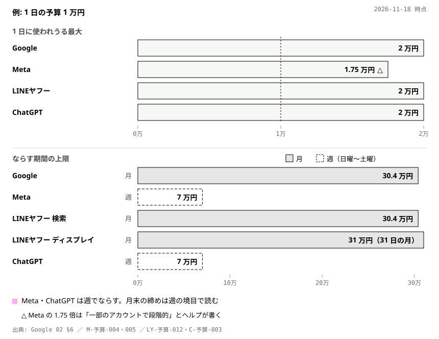
X03予算の上振れの比べ方: Google・Meta・LINEヤフー・ChatGPT X04計測の部品の対応: Google・Meta・LINEヤフー・ChatGPT
X04計測の部品の対応: Google・Meta・LINEヤフー・ChatGPT X05運用の型の当てはめの比較: Meta・LINEヤフー・ChatGPT
X05運用の型の当てはめの比較: Meta・LINEヤフー・ChatGPT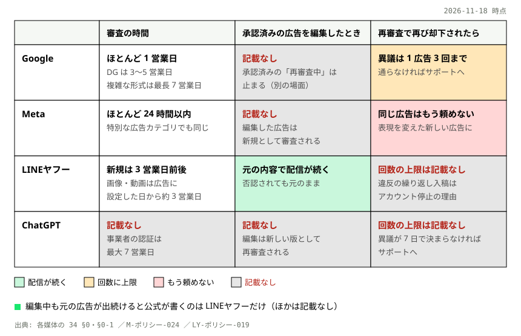
X06審査の比べ方: Google・Meta・LINEヤフー・ChatGPT X07広告文はどこで切れるか: Google・LINEヤフー・Meta・ChatGPT
X07広告文はどこで切れるか: Google・LINEヤフー・Meta・ChatGPTLINEヤフー の仕組み
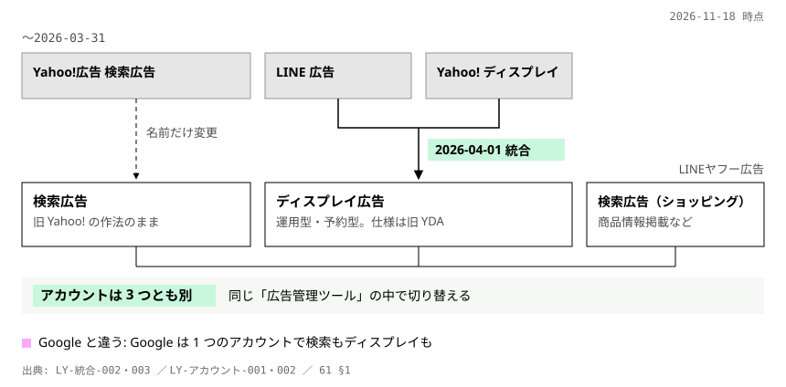
L01LINEヤフー広告のサービスの地図（2026-11-18 時点）統合されたのはディスプレイだけで、検索は名前が変わっただけ。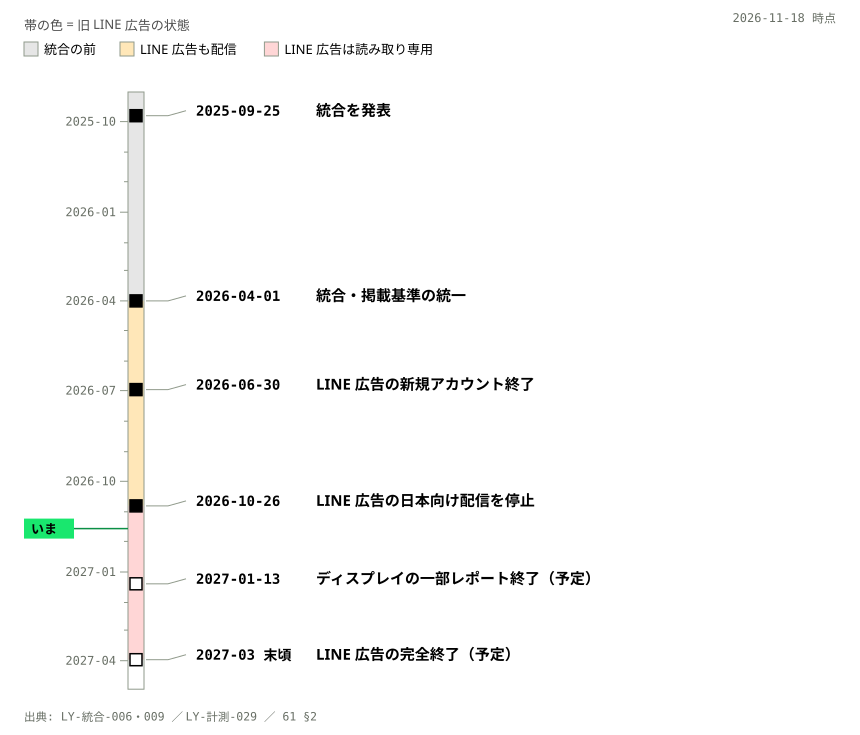
L02LINE 広告との統合の年表（2026-11-18 時点）いまは配信停止のあとの後片付けの段階で、移行ツールは完全終了まで使える。 L03LINEヤフー広告のタグの置き方（2026-11-18 時点）サイトジェネラルタグは 1 ページに 1 つで足り、媒体ごとに要るのはコンバージョン測定タグ。
L03LINEヤフー広告のタグの置き方（2026-11-18 時点）サイトジェネラルタグは 1 ページに 1 つで足り、媒体ごとに要るのはコンバージョン測定タグ。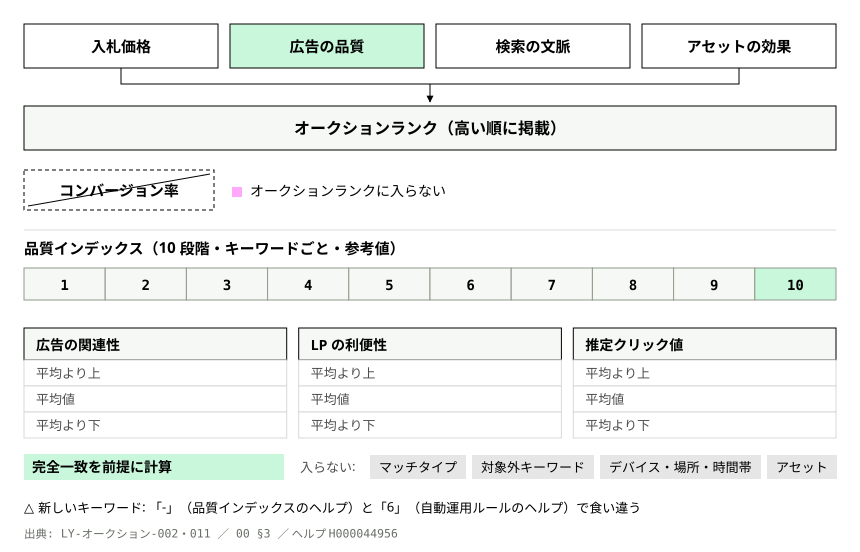
L04オークションランクと品質インデックス（検索広告）順位を上げる手段は入札と品質で、成果率は順位に入らない。 L05マッチタイプと検索クエリーマッチングの広がりいちばん外の検索クエリーマッチングだけは自分でオンにする機能で、キーワードが無くても出る（キーワード無しのときは {targetid}＝kwl-3500001）。
L05マッチタイプと検索クエリーマッチングの広がりいちばん外の検索クエリーマッチングだけは自分でオンにする機能で、キーワードが無くても出る（キーワード無しのときは {targetid}＝kwl-3500001）。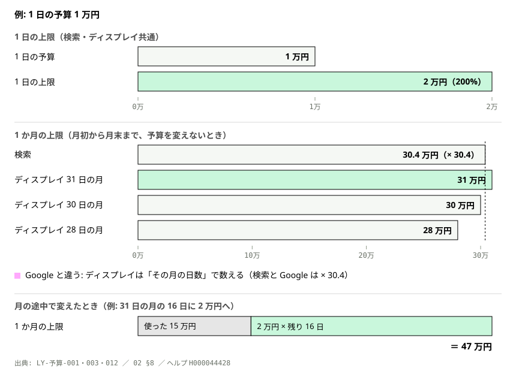
L06予算と請求の上限（例: 1 日の予算 1 万円）1 日は検索もディスプレイも 200% まで。 L07損失率（予算）の中身: LINEヤフーと Google の違い同じ名前の指標でも、LINEヤフーの損失率（予算）には入札価格と残高の損失が混ざる。
L07損失率（予算）の中身: LINEヤフーと Google の違い同じ名前の指標でも、LINEヤフーの損失率（予算）には入札価格と残高の損失が混ざる。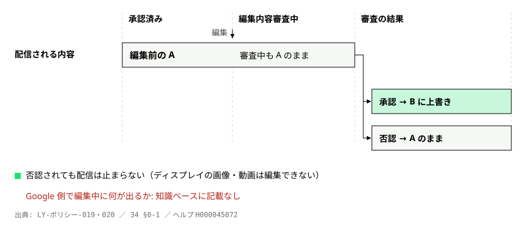
L08承認済みの広告を編集したとき（LINEヤフー）承認済みの広告の小さな修正は、配信を止めずに試せる。 L09検索広告の入札戦略: キャンペーン個別とポートフォリオ目標値は、キャンペーン個別では最大化のオプション、ポートフォリオでは独立の戦略になる。
L09検索広告の入札戦略: キャンペーン個別とポートフォリオ目標値は、キャンペーン個別では最大化のオプション、ポートフォリオでは独立の戦略になる。 L10検索とディスプレイで別のもの・共通のもの（LINEヤフー）タグを入れるとき、サイトジェネラルタグは 1 つで足りるが、成果のタグ・自動タグ設定・サーバー連携は検索とディスプレイで 1 組ずつ要る。
L10検索とディスプレイで別のもの・共通のもの（LINEヤフー）タグを入れるとき、サイトジェネラルタグは 1 つで足りるが、成果のタグ・自動タグ設定・サーバー連携は検索とディスプレイで 1 組ずつ要る。 L11推定コンバージョンの合算（LINEヤフー）コンバージョン数には推定が混ざっていて外せないので、自社の受注データと突き合わせるときのずれの幅を先に決めておく。
L11推定コンバージョンの合算（LINEヤフー）コンバージョン数には推定が混ざっていて外せないので、自社の受注データと突き合わせるときのずれの幅を先に決めておく。 L12検索広告のコンバージョン API で送るもの（LINEヤフー）着地の時点で yclid（なければ sa_p・sa_t・sa_ra）を保存し、成果のときの url・user_agent・ip もサーバーに残しておかないと送れない。
L12検索広告のコンバージョン API で送るもの（LINEヤフー）着地の時点で yclid（なければ sa_p・sa_t・sa_ra）を保存し、成果のときの url・user_agent・ip もサーバーに残しておかないと送れない。 L13ディスプレイ広告の配信面と絞り方（LINEヤフー、2026-11-18 時点）指定しなければ LINE・Yahoo! JAPAN・提携先・Agent i の全部に出て、面を絞る道具はプレイスメントだけ。
L13ディスプレイ広告の配信面と絞り方（LINEヤフー、2026-11-18 時点）指定しなければ LINE・Yahoo! JAPAN・提携先・Agent i の全部に出て、面を絞る道具はプレイスメントだけ。 L14オーディエンスリストの種類と組み合わせ（LINEヤフー ディスプレイ）興味関心などの共通オーディエンスも自社のリストも同じ「オーディエンスリスト」なので、2 本付けると OR で広がる。
L14オーディエンスリストの種類と組み合わせ（LINEヤフー ディスプレイ）興味関心などの共通オーディエンスも自社のリストも同じ「オーディエンスリスト」なので、2 本付けると OR で広がる。 L15再審査の頼み方と、承認済みの広告の編集（LINEヤフー）LP だけを直して広告に触らないと見直されないので、保存か一括の再審査依頼を必ず行う。
L15再審査の頼み方と、承認済みの広告の編集（LINEヤフー）LP だけを直して広告に触らないと見直されないので、保存か一括の再審査依頼を必ず行う。 L16広告文の表記のルール（LINEヤフー）LINEヤフーは記号と括弧を数で決めているので、Google で通った広告文も入稿前に数え直す。
L16広告文の表記のルール（LINEヤフー）LINEヤフーは記号と括弧を数で決めているので、Google で通った広告文も入稿前に数え直す。 L17掲載基準と日本の法令のどちらで落ちるか（LINEヤフー）LINEヤフーの否認は日本の法律の論点に早く気づく合図になるが、打消し表示・二重価格・ステマは審査を通っても法の側の確認が残る。
L17掲載基準と日本の法令のどちらで落ちるか（LINEヤフー）LINEヤフーの否認は日本の法律の論点に早く気づく合図になるが、打消し表示・二重価格・ステマは審査を通っても法の側の確認が残る。 L18運用の型の規則 175 個の当てはめ: 検索とディスプレイ（LINEヤフー）LINEヤフーの検索は Google の型の半分ほどがそのまま通り、ディスプレイは言い換えと使えないものが増える。
L18運用の型の規則 175 個の当てはめ: 検索とディスプレイ（LINEヤフー）LINEヤフーの検索は Google の型の半分ほどがそのまま通り、ディスプレイは言い換えと使えないものが増える。 L19LINEヤフー広告を 3 つの芯で見る（2026-11-18 時点）LINEヤフーの質問は、最初に「検索の話か、ディスプレイの話か」を決めてから考える。
L19LINEヤフー広告を 3 つの芯で見る（2026-11-18 時点）LINEヤフーの質問は、最初に「検索の話か、ディスプレイの話か」を決めてから考える。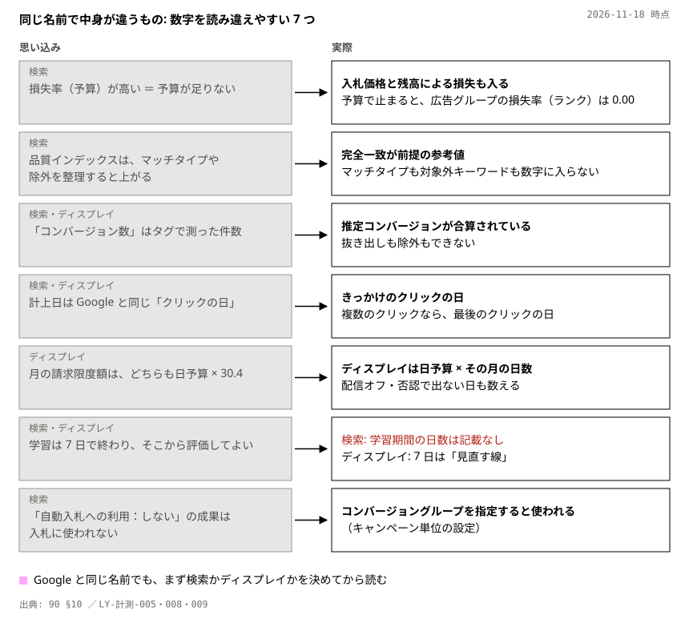
L20同じ名前で中身が違うもの: 数字を読み違えやすい 7 つ（LINEヤフー）LINEヤフーの数字は、Google と同じ名前のまま中身が違うものが多い。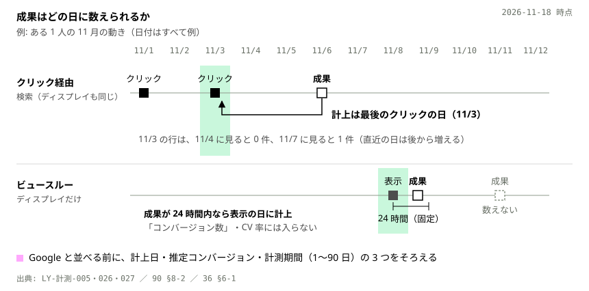
L21成果はどの日に数えられるか（LINEヤフー）直近の数日はクリックの日に後から成果が足されるので、必ず悪く見える。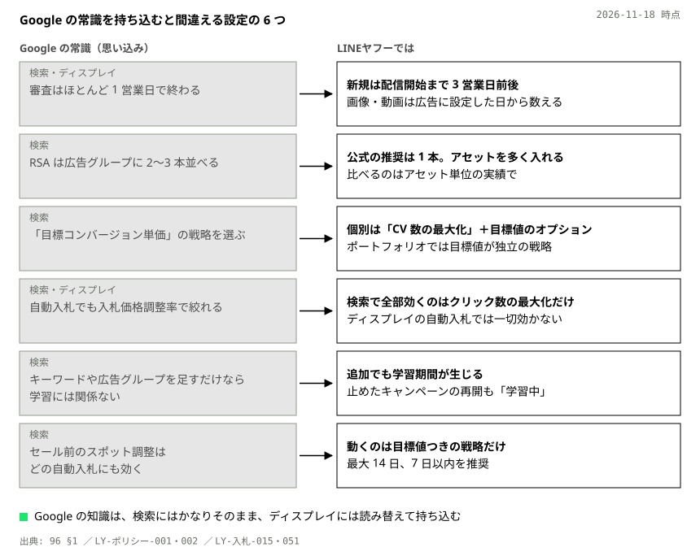
L22Google の常識を持ち込むと間違える設定の 6 つ（LINEヤフー）Google のキャンペーンを複製したり、Google の手順書で操作したりするときに引っかかる所。 L23古い名前・終わったもの → 今の呼び方（LINEヤフー、2026-11-18 時点）「Yahoo!広告」「YDA」「LINE 広告」「部分一致」の古い記事や社内資料は、この対応で読み替える。
L23古い名前・終わったもの → 今の呼び方（LINEヤフー、2026-11-18 時点）「Yahoo!広告」「YDA」「LINE 広告」「部分一致」の古い記事や社内資料は、この対応で読み替える。 L24入札価格調整率は、どの入札戦略で効くか（LINEヤフー）自動入札で絞りたいときは、調整率ではなくターゲティングで外すか、広告グループやキャンペーンを分ける。
L24入札価格調整率は、どの入札戦略で効くか（LINEヤフー）自動入札で絞りたいときは、調整率ではなくターゲティングで外すか、広告グループやキャンペーンを分ける。 L25フレーズ一致: キーワードは語順を問わず、除外は語順を問う（LINEヤフー）Google の感覚で「キーワードもフレーズ、除外もフレーズ」と組むと、語順を入れ替えた不要な検索に出続ける。
L25フレーズ一致: キーワードは語順を問わず、除外は語順を問う（LINEヤフー）Google の感覚で「キーワードもフレーズ、除外もフレーズ」と組むと、語順を入れ替えた不要な検索に出続ける。 L26スマートターゲティングが広げる所・守る所（LINEヤフー ディスプレイ）リストを付けても、初期値のままならリストの外の人にも出て、リストの実績も溜まらなくなる。
L26スマートターゲティングが広げる所・守る所（LINEヤフー ディスプレイ）リストを付けても、初期値のままならリストの外の人にも出て、リストの実績も溜まらなくなる。 L27何が止まるか: 広告 1 本・商品・アカウント（LINEヤフー）LINEヤフーは法律の処分や重大な違反を商品単位で引き継ぎ、直しても戻れないことがある。
L27何が止まるか: 広告 1 本・商品・アカウント（LINEヤフー）LINEヤフーは法律の処分や重大な違反を商品単位で引き継ぎ、直しても戻れないことがある。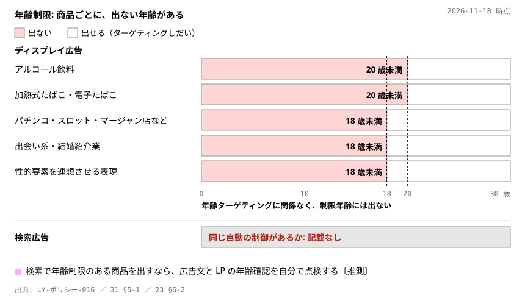
L28年齢制限: 商品ごとに、出ない年齢がある（LINEヤフー）ディスプレイは年齢の扱いを媒体に任せられるが、検索で同じ制御があるかはこの知識ベースに無い。 L29検索の「出ない・取れない」は上から順に外す（LINEヤフー、〔当てはめ〕）LINEヤフーの検索は Google の制約の順がほぼそのまま使えるが、b と c の境目と、c と d の見え方がずれる。
L29検索の「出ない・取れない」は上から順に外す（LINEヤフー、〔当てはめ〕）LINEヤフーの検索は Google の制約の順がほぼそのまま使えるが、b と c の境目と、c と d の見え方がずれる。 L30立ち上げの時間割（LINEヤフー、〔当てはめ〕）最初の 3 週間は判定をしない期間として計画に入れておく。
L30立ち上げの時間割（LINEヤフー、〔当てはめ〕）最初の 3 週間は判定をしない期間として計画に入れておく。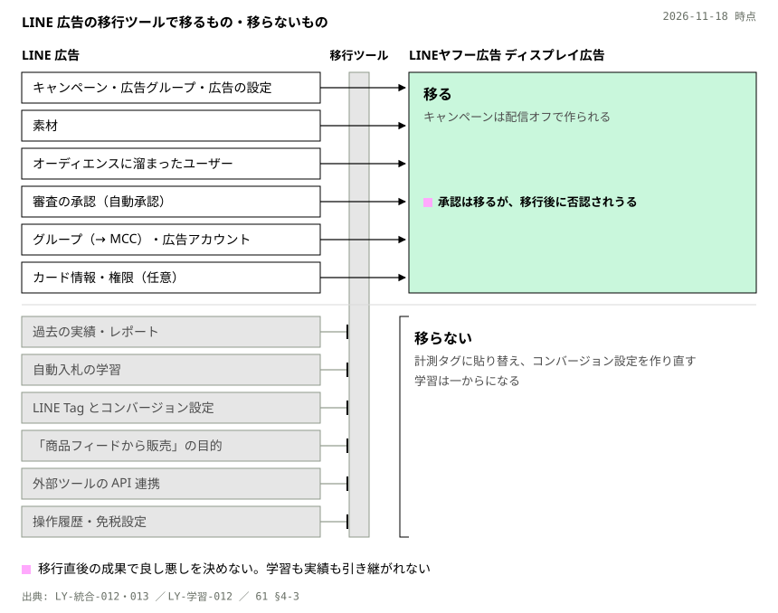
L31LINE 広告の移行ツールで移るもの・移らないもの（2026-11-18 時点）移行ツールは設定と素材とオーディエンスを運ぶ道具で、計測と学習は運ばない。一覧
LINEヤフー のメモ
いまある分だけです。知識ベースに足されたら、作り直すとここにも出ます。
00全体像（LINEヤフー広告 検索広告・ディスプレイ広告）42,337 字02入札と予算26,734 字04検索広告の構成とキーワード30,032 字06計測とコンバージョン（タグ・自動タグ設定・コンバージョン API・インポート・推定コンバージョン）40,973 字23ディスプレイ広告のターゲティングと配信面28,628 字28「運用の型」（LINEヤフーの公式の推奨から組み立てた、監査・引き継ぎ・立ち上げ・点検・予算・止める判断・繁忙期・目標・報告・変更の記録）35,201 字31日本の広告法規と、LINEヤフー広告 掲載基準（地図メモ）30,321 字34審査落ち（掲載不可・掲載停止・アカウント停止）の原因と直し方51,648 字36運用の型の LINEヤフーへの当てはめ（点検・立ち上げ・監査・比べ方・判断の差分）63,811 字61LINE 広告との統合の状況16,115 字65API とレポートの取り出し（API・公式 MCP・スクリプト・管理画面のレポート）32,977 字90核となる理解（LINEヤフー広告の運用を、仕組みから考えるための 1 本）27,101 字94裏取りの記録9,515 字95出どころ一覧33,103 字96意外な点とよくある誤解9,317 字